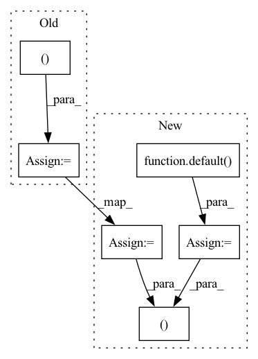

Pattern ID :9813
Before Change
def forward(self, x):
b, t, e, m = *x.shape, self.num_mem_kv
x = x.transpose(0, 1)
kv = torch.cat((x, self.mem_kv.expand(m, b, e) ))
attn_shape = (t, t + m)
attn_mask = torch.zeros(*attn_shape, device=x.device)After Change
device = x.device
b, t, e, m = *x.shape, self.num_mem_kv
mem = self.mem_kv.expand(m, b, e)
keys = default( keys, torch.empty(b, 0, e, device=device))
x, keys = x.transpose(0, 1), keys.transpose(0, 1)
kv = torch.cat((x, mem, keys ))
kv_len = t + m + keys.shape[0]
attn_shape = (t, kv_len)In pattern: SUPERPATTERN
Frequency: 3
Non-data size: 6
Instances Fragment ID: 35220585
Project Name: lucidrains/reformer-pytorch
Commit Name: b30dced7bd051f2edbe520e6d97c9cd5455511d6
Time: 2020-01-24
Author: lucidrains@gmail.com
File Name: reformer_pytorch/reformer_pytorch.py
M Class Name: SelfAttention
N Class Name: SelfAttention
M Method Name: forward(3)
N Method Name: forward(2)
M Parent Class: nn.Module
N Parent Class: nn.Module
M File Name: reformer_pytorch/reformer_pytorch.py
N File Name: reformer_pytorch/reformer_pytorch.py
M Start Line: 361
M End Line: 364
N Start Line: 383
N End Line: 395
Before Change
b, t, e, h, m = *x.shape, self.heads, self.num_mem_kv
assert t % self.bucket_size == 0, f"Sequence length needs to be divisible by target bucket size - {self.bucket_size}"
x = torch.cat((x, self.mem_kv.expand(b, m, e) ), dim=1)
qk = self.toqk(x)
v = self.tov(x)
After Change
device = x.device
b, t, e, h, m = *x.shape, self.heads, self.num_mem_kv
mem = self.mem_kv.expand(b, m, e)
keys = default( keys, torch.empty(b, 0, e, device=device))
kv_len = t + m + keys.shape[1]
assert kv_len % self.bucket_size == 0, f"Sequence length needs to be divisible by target bucket size - {self.bucket_size}"
x = torch.cat((x, mem, keys ), dim=1)
qk = self.toqk(x)
v = self.tov(x)
Fragment ID: 35220575
Project Name: lucidrains/reformer-pytorch
Commit Name: b30dced7bd051f2edbe520e6d97c9cd5455511d6
Time: 2020-01-24
Author: lucidrains@gmail.com
File Name: reformer_pytorch/reformer_pytorch.py
M Class Name: LSHSelfAttention
N Class Name: LSHSelfAttention
M Method Name: forward(3)
N Method Name: forward(2)
M Parent Class: nn.Module
N Parent Class: nn.Module
M File Name: reformer_pytorch/reformer_pytorch.py
N File Name: reformer_pytorch/reformer_pytorch.py
M Start Line: 325
M End Line: 325
N Start Line: 339
N End Line: 349
Before Change
out = self.to_logits(x)
next_mem, next_lmem = map(torch.stack, (next_mem, next_lmem ))
next_mem, next_lmem = map(torch.detach, (next_mem, next_lmem))
return out, Memory(short = next_mem, long = next_lmem)After Change
num_memory_layers = len(self.memory_layers)
init_mem = lambda: torch.empty(num_memory_layers, b, 0, d, **to(x))
mem = default( mem, init_mem)
lmem = default(lmem, init_mem)
mem_len, lmem_len = map(lambda t: t.shape[2], (mem, lmem))
total_len = mem_len + lmem_len + self.seq_len
pos_emb = self.pos_emb[:, (self.seq_len - t):total_len]
mem_iter, lmem_iter = map(iterate_tensor, (mem, lmem))
hiddens = []
for ind, (attn, ff) in enumerate(zip(self.attn_layers, self.ff_layers)):
layer_num = ind + 1
use_memory = layer_num in self.memory_layers
memories = map(next, (mem_iter, lmem_iter)) if use_memory else None
if use_memory:
hiddens.append(x)
x = attn(x, memories = memories, calc_memory = use_memory, input_mask = mask, pos_emb = pos_emb)
x = ff(x)
hiddens = torch.stack(hiddens)
out = self.to_logits(x)
// calculate next memory state
next_memory = self.memory_network(lmem, mem, hiddens)
return out, next_memory
Fragment ID: 35220581
Project Name: lucidrains/memory-transformer-xl
Commit Name: cbabe1ae6fa311092a9d0a88116c079a5ad8d790
Time: 2020-07-22
Author: lucidrains@gmail.com
File Name: memory_transformer_xl/memory_transformer_xl.py
M Class Name: MemoryTransformerXL
N Class Name: MemoryTransformerXL
M Method Name: forward(4)
N Method Name: forward(4)
M Parent Class: nn.Module
N Parent Class: nn.Module
M File Name: memory_transformer_xl/memory_transformer_xl.py
N File Name: memory_transformer_xl/memory_transformer_xl.py
M Start Line: 255
M End Line: 296
N Start Line: 306
N End Line: 345